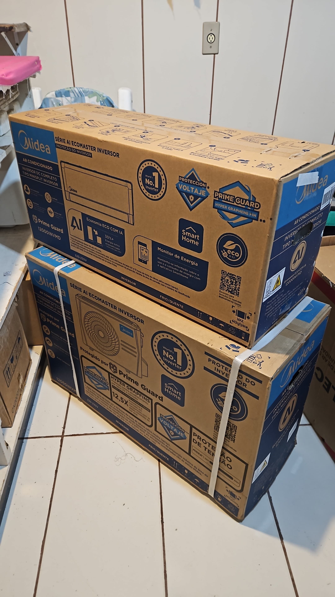
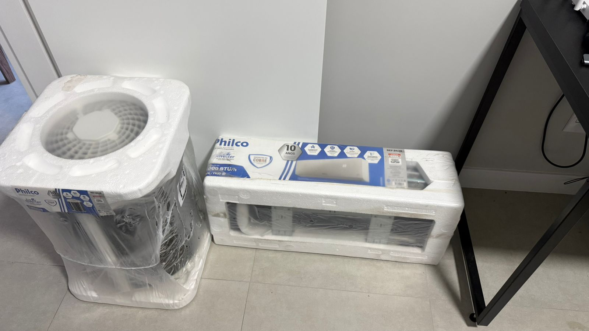
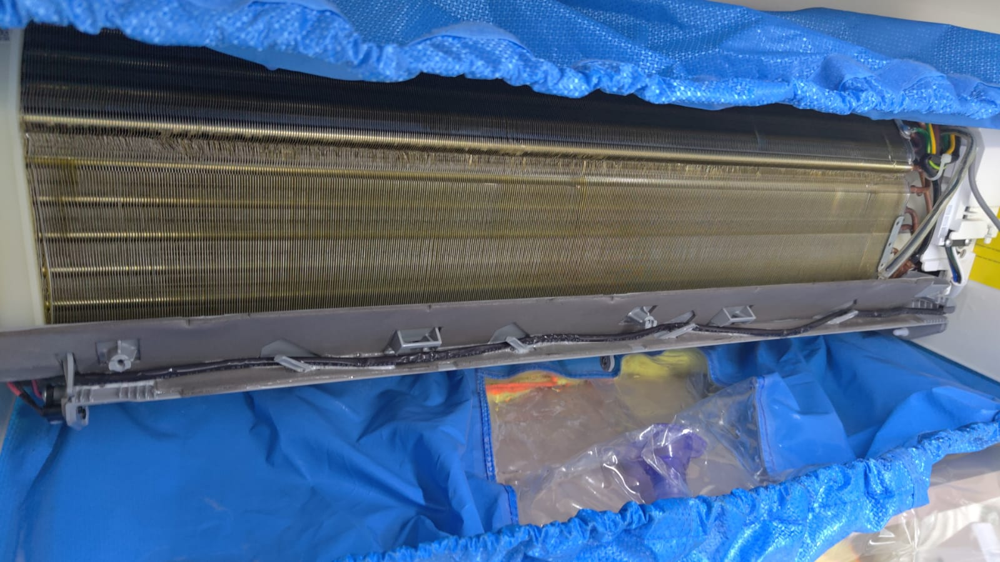
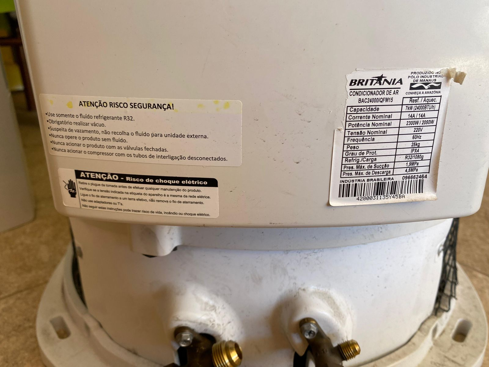
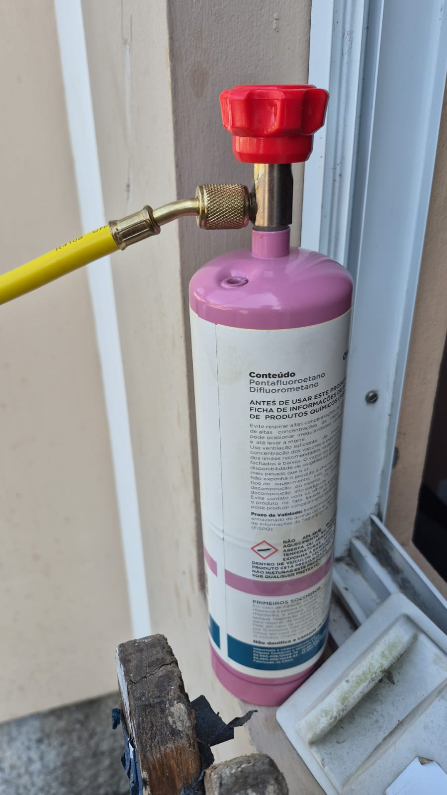
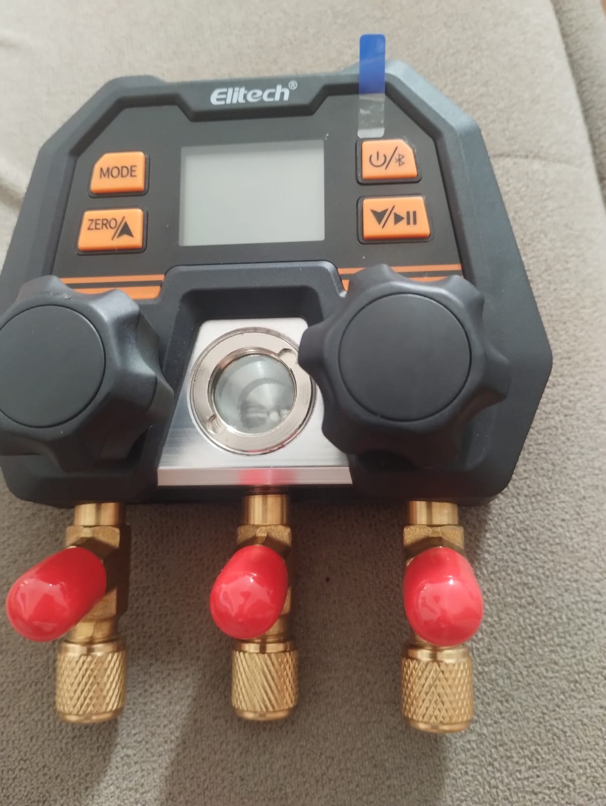

{kind=link}
{kind=link}
{kind=link}
{kind=link}
{kind=link}
{kind=link}
{kind=link}
{kind=link}
{kind=link}
{kind=link}
Instalação de Ar-Condicionado
Projeto e instalação técnica para residências, comércios e escritórios, com foco em segurança e eficiência.
Saiba maisInstalação, manutenção, limpeza, higienização, carga de gás e remoção com reinstalação para casas, apartamentos, comércios e escritórios em Florianópolis.
Projeto e instalação técnica para residências, comércios e escritórios, com foco em segurança e eficiência.
Saiba maisManutenção preventiva e corretiva para reduzir falhas, melhorar desempenho e aumentar a vida útil do equipamento.
Saiba maisLimpeza técnica de filtros e componentes para melhorar a qualidade do ar e o rendimento do aparelho.
Saiba maisHigienização profunda para reduzir odores, fungos e contaminantes, promovendo um ar mais saudável.
Saiba maisDiagnóstico técnico e recarga correta de fluido refrigerante para recuperar a performance térmica.
Saiba maisDesinstalação cuidadosa, transporte e reinstalação com testes para funcionamento seguro no novo local.
Saiba maisDiagnóstico estruturado e correção de falhas para devolver estabilidade ao equipamento.
Saiba maisPlano de Manutenção, Operação e Controle para sistemas de climatização em empresas e condomínios.
Saiba maisPara facilitar seu atendimento, trabalhamos com as seguintes formas de pagamento:
Dinheiro | Cartão de crédito | Cartão de débito | PIX
Somos uma equipe técnica especializada em climatização, com atendimento em Florianópolis e região para ambientes residenciais e comerciais. Trabalhamos com diagnóstico claro, execução cuidadosa e foco em segurança e desempenho.

Planejamento da tubulação de cobre, isolamento térmico, drenagem e acabamento da infraestrutura para entregar uma instalação mais limpa, segura e durável em imóveis de Florianópolis e Grande Florianópolis.

Atendimento realizado por profissionais com [NR-10 / NR-35 / treinamento em instalação e manutenção de split / capacitação em sistemas inverter / treinamento de fabricante], reforçando mais segurança e critério técnico em serviços de climatização.

Em bairros como Campeche, Ingleses, Canasvieiras, Barra da Lagoa e Jurerê, a instalação considera maresia, umidade e exposição ao vento, fatores que influenciam diretamente na durabilidade e na eficiência do equipamento.

A avaliação considera metragem, insolação, circulação de ar, carga térmica, capacidade em BTUs, além de verificação de rede elétrica e disjuntor, ajudando a indicar uma solução mais coerente para cada ambiente.

O serviço analisa linha frigorígena, caimento da drenagem, posição da evaporadora e da condensadora, ajudando a evitar vazamentos, retorno de água, ruído excessivo e retrabalho após a instalação.

A higienização envolve componentes que afetam diretamente o rendimento, como filtros, serpentina, bandeja de drenagem e turbina, ajudando a preservar desempenho e qualidade do ar em residências e comércios da Grande Florianópolis.
Você chama no WhatsApp, ligação ou formulário e informa sua necessidade.
Analisamos tipo de ambiente, equipamento e urgência do atendimento.
Enviamos proposta clara, com escopo técnico e previsão de execução.
Realizamos o serviço com foco em segurança, limpeza e desempenho.
"A instalação no apartamento ficou excelente e o atendimento foi rápido."
Mariana S. - Centro"Fizemos manutenção no escritório e o equipamento voltou a render muito bem."
Carlos M. - Itacorubi"Orçamento claro, equipe educada e serviço técnico confiável."
Renata L. - CanasvieirasSim. Realizamos instalação técnica em bairros centrais e regiões continentais e do norte, sul e leste da ilha, como Centro, Trindade, Itacorubi, Campeche, Ingleses e Coqueiros. Trabalhamos com as principais marcas do mercado, como Springer Midea, LG, Samsung, Daikin, Fujitsu, Gree, Elgin, Philco e Electrolux. Em cada atendimento avaliamos metragem, insolação, rede elétrica e posição da condensadora para indicar a melhor capacidade em BTUs para o clima de Florianópolis.
Para residências em Florianópolis, o ideal é manutenção preventiva a cada 6 meses em uso intenso e, no mínimo, anual em uso moderado. Em regiões com maresia, como áreas próximas a Beira-Mar, Estreito, Coqueiros e bairros litorâneos, a revisão periódica ajuda a reduzir corrosão e perda de rendimento.
Não. A limpeza é focada em filtros e partes de manutenção de rotina. Nessa etapa, normalmente utilizamos detergente neutro, limpa-coil (desengraxante específico para serpentina), bactericida/fungicida para HVAC e água pressurizada para remover sujeira sem agredir os componentes. A higienização é mais profunda, com tratamento de componentes internos para reduzir odores, fungos e microrganismos. Em uma cidade úmida como Florianópolis, esse cuidado faz diferença na qualidade do ar em apartamentos, casas e salas comerciais.
Sim. Organizamos a agenda por região para ganhar eficiência de deslocamento e reduzir tempo de espera, inclusive em horários de trânsito mais intenso entre ilha e continente (como acessos da Ponte Pedro Ivo e Via Expressa). Assim, conseguimos atender com mais previsibilidade em diferentes pontos da cidade.
Você envia as informações pelo WhatsApp ou formulário (bairro, tipo de imóvel, modelo do aparelho e necessidade), e nossa equipe retorna com orientação técnica e proposta clara. Quando necessário, fazemos avaliação complementar para garantir um orçamento mais preciso e adequado ao seu cenário em Florianópolis.
Atendemos Florianópolis e cidades da Grande Florianópolis, com cobertura organizada por bairro e por tipo de serviço. A atuação inclui regiões como Centro, Trindade, Itacorubi, Lagoa, Campeche, Ingleses, São José, Palhoça e Biguaçu. Veja a lista completa em Regiões Atendidas.
Fale com nossa equipe e receba orientação técnica para seu caso.